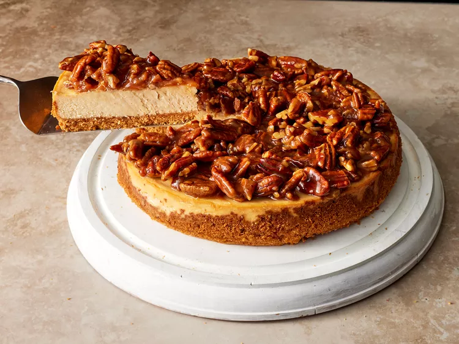

This decadent pecan pie cheesecake is the perfect combo featuring the best of each classic dessert: a smooth, creamy cheesecake with a crunchy pecan topping.

Preheat the oven to 350 degrees F (175 degrees C). Spray a 9-inch springform pan with cooking spray; line bottom with a round of parchment paper, and wrap outside of pan with heavy duty aluminum foil.
Combine graham cracker crumbs, pecans, sugar, cinnamon, and salt for the crust in a bowl. Stir in melted butter until mixture has a sand-like consistency. Press crumb mixture evenly into the bottom and up the sides of the prepared pan using a flat-bottomed measuring cup or your fingers.
Bake in the preheated oven on the center oven rack until lightly browned and fragrant, about 10 minutes. Remove from oven and cool on a wire rack for 15 minutes. Reduce oven temperature to 325 degrees F (165 degrees C), and place oven rack in lower third position.
Meanwhile, combine cream cheese and brown sugar in a food processor and process until smooth and no lumps remain, about 45 seconds, scraping down sides as needed. Add eggs, 1 at a time, pulsing once after each addition. Add sour cream, flour, vanilla, cinnamon, and salt; pulse 2 to 3 times or until combined. Pour batter into cooled crust.
Bake in the hot oven at 325 degrees F (165 degrees C) on rack in lower third position until center jiggles slightly, 45 to 50 minutes. Turn oven off, prop oven door open slightly, and let cheesecake stand in oven 1 hour. Remove from oven, discard foil, and run a knife around around edge of crust to release from pan (to avoid cracks while cooling). Cover with plastic wrap, and chill at least 6 hours or overnight.
For the topping set a a medium nonstick saucepan over low heat. Add sugar in an even layer and cook over low, undisturbed, until warm, about 2 minutes. Add water, and stir constantly until all the sugar is melted, about 45 seconds. Add butter, stirring constantly until butter is melted and incorporated, about 30 seconds. Increase heat to medium; add heavy cream, rum, cinnamon, and vanilla, and cook, stirring constantly, until well combined and slightly thickened, about 2 minutes. Add pecans, stirring until well coated, and remove from heat. Cool until room temperature and thickened, about 30 minutes.
Remove cheesecake from refrigerator, and carefully remove from springform pan. Place on a serving platter, and top with cooled pecan pie topping. Serve immediately, or allow cheesecake to soften for 15 minutes before serving.